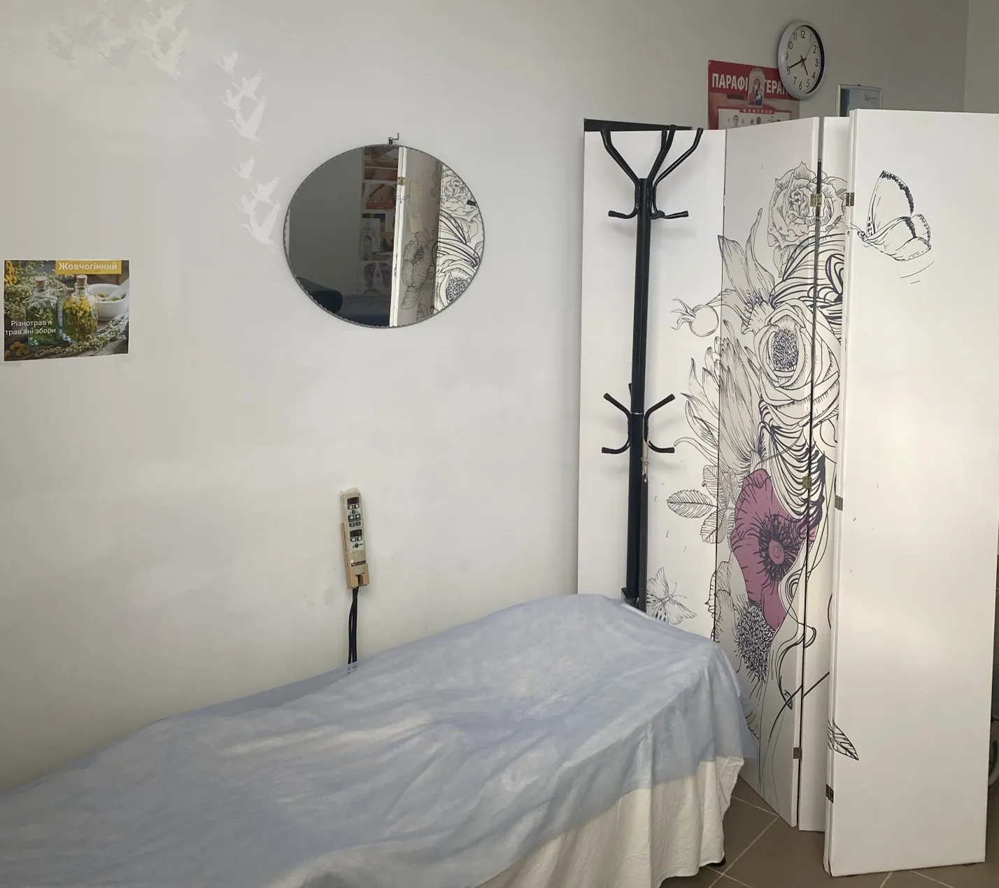
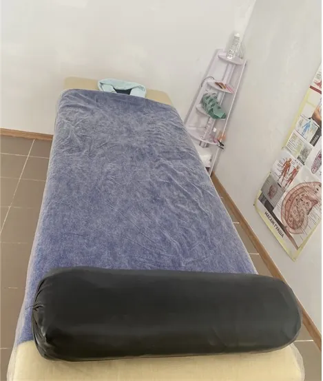
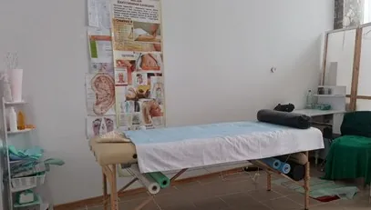

Точний вплив
Точковий масаж — це натиск пальцями на певні ділянки тіла: активні точки, тригерні зони в м'язах, рефлекторні зони. Тиск дозований і зосереджений, тому відчуття інші, ніж при загальному розслабленні.
Його обирають при затисках у шиї, плечах і попереку та при головному болю напруги. Майстер поступово збільшує тиск, а ви завжди можете сказати, якщо занадто сильно.

Затишний простір у Моршині
Дозований натиск

Шия, плечі, поперек
Замість того, щоб масажувати все підряд, ми знаходимо місця, які болять або «гудуть», і працюємо саме з ними. Відчуття можуть бути виразними, але не мають бути нестерпними.
Точковий масаж має протипоказання: гострі запальні процеси, підвищена температура, ушкодження шкіри в зоні впливу. Розкажіть про свій стан — якщо метод не підходить, підберемо іншу техніку.
Тривалість сеансу — 30, 60 або 90 хвилин залежно від процедури та ваших побажань.
